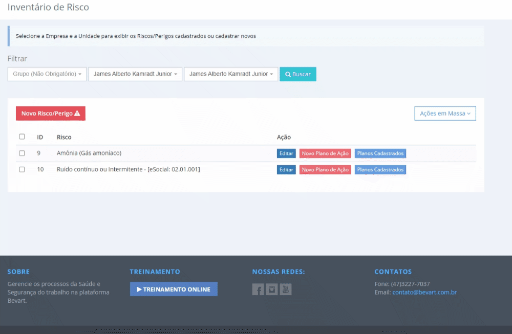

Como elaborar, monitorar e gerar o PGR no sistema
Três etapas e nenhuma delas é "escrever o documento": cadastrar os GHEs, montar o inventário com planos de ação e acompanhar. O PDF é a última coisa que acontece.

O essencial em 30 segundos
- Comece pelos GHEs: funções agrupadas e os exames que a exposição exige.
- No inventário de riscos, cada risco diz em quais documentos aparece — LTCAT, PGR, PCMSO, eSocial.
- Plano de ação e treinamentos nascem ligados ao risco; o PDF do PGR sai no fim, com poucos cliques.
Existe uma ordem que economiza semanas de retrabalho na elaboração do PGR — e ela não começa no documento. Começa em como a empresa está organizada dentro do sistema, porque é dessa organização que o documento é extraído.
1. Cadastrar os GHEs
Com empresa, setores, funções e funcionários cadastrados, vá em Gestão Segurança → GHE. Adicione as funções que pertencem ao grupo e indique os exames relacionados àquele GHE.

Os exames escolhidos no GHE impactam os atendimentos e o PCMSO. É o mesmo cadastro servindo à segurança e à saúde — e é isso que evita o clássico descompasso entre o que o PGR diz e o que o PCMSO pede.
2. Montar o inventário de riscos
Em Gestão Segurança → Inventário de Riscos, informe os riscos e quais GHEs estão expostos a cada um.

No cadastro de cada risco você define:
- Em quais documentos ele aparece — LTCAT, PGR, PCMSO, eSocial;
- Informações de medição, quando houver avaliação quantitativa;
- EPIs relacionados;
- GHEs expostos.
Esse primeiro campo é o que mais economiza tempo depois: o mesmo risco entra no laudo, no programa e no evento sem ser redigitado, e sem versões divergentes circulando.
Planos de ação e treinamentos
Localize o risco na lista e clique em Novo Plano de Ação. É aqui que o inventário deixa de ser diagnóstico e vira gestão: cada medida nasce amarrada ao risco que a originou.

Sobre o método por trás dessa etapa — classificação, hierarquia de controle, evidência —, vale a leitura de como montar o inventário de riscos e o plano de ação.
O documento é o fim da linha, não o começo
GHE, inventário e plano de ação alimentam PGR, LTCAT, PCMSO e os eventos do eSocial — sem redigitar nada entre eles.
Criar conta grátis3. Acompanhar e gerar o documento
Com as informações consolidadas, acompanhe as ações e gere os relatórios. O PGR sai em Gestão Segurança → Documentos, com poucos cliques.
Na hora de emitir, você escolhe entre dois formatos de PDF. Se o documento vai para um cliente que espera apresentação de consultoria, vale conhecer o novo modelo de PGR em PDF, com capa institucional, sumário executivo e cores por nível de risco.


Uma revisão mensal do plano de ação — o que venceu, o que atrasou, o que precisa de orçamento — vale mais do que refazer o PGR uma vez por ano. O documento é fotografia; o plano é o filme.
Resumo do caminho
- Cadastre empresa, setores, funções e funcionários.
- Monte os GHEs com as funções e os exames da exposição.
- Registre os riscos, marcando documentos, medições, EPIs e GHEs expostos.
- Crie planos de ação e treinamentos a partir de cada risco.
- Acompanhe as ações e gere o PGR quando precisar entregá-lo.
Perguntas frequentes
Preciso cadastrar o GHE antes do inventário?
Sim. O inventário registra quais GHEs estão expostos a cada risco, então o agrupamento precisa existir antes. É também o GHE que carrega os exames que vão para o PCMSO.
Um mesmo risco pode ir para vários documentos?
Sim, e é justamente o ponto: no cadastro do risco você indica se ele aparece no LTCAT, no PGR, no PCMSO e nos eventos do eSocial, sem precisar recadastrá-lo em cada lugar.
Com que frequência devo gerar o PDF do PGR?
Sempre que houver mudança relevante no inventário ou nas medidas, e nas revisões previstas. Como a geração é automática, não há motivo para trabalhar com um documento desatualizado.
O plano de ação precisa estar dentro do PGR?
Sim. O PGR é composto pelo inventário de riscos e pelo plano de ação — são os dois documentos que a NR-1 exige, e o segundo é o que demonstra que a empresa está tratando o que identificou.